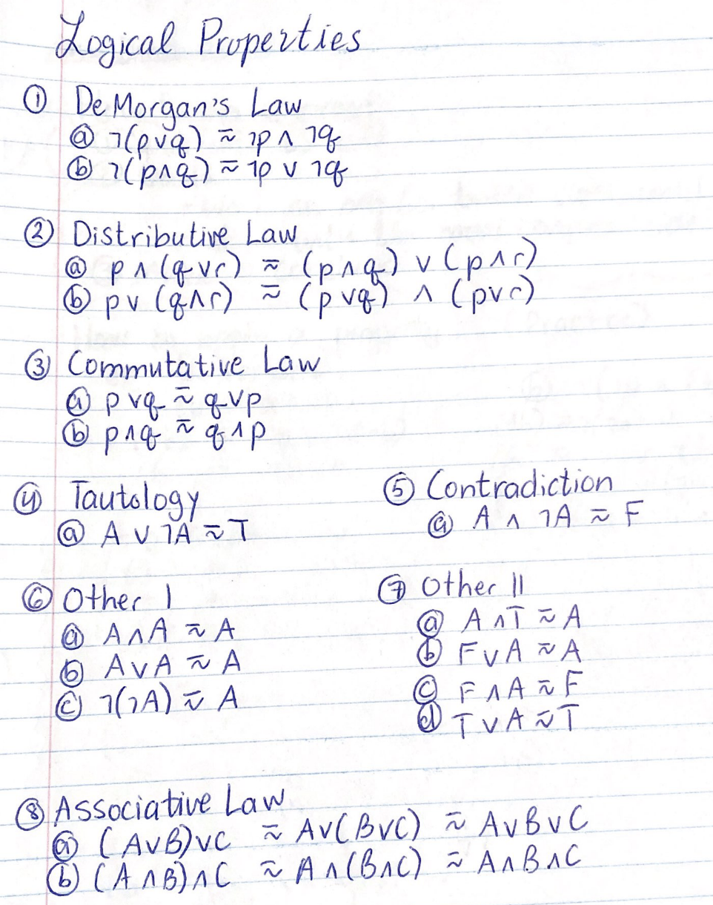

Website:
Click Here
Number Systems
To identify which number system, we use a subscript:
(Note: you don't need leading zeros in binary)
110 01112, 6410, A416
Binary
- A system of numerical notation with base 2, in which each place of a number is expressed as a 0 or 1 and corresponds to a power of two.
- Computers "think" and communicate in binary
- 0 - off/false, 1 - on/true
| 27 |
26 |
25 |
24 |
23 |
22 |
21 |
20 |
128 |
64 |
32 |
16 |
8 |
4 |
2 |
1 |
| Bit: |
Byte: |
- a single binary digit (0 or 1)
|
- 8 bits
- can be used to represent a letter/symbol
- 256 diff combos
- largest possible val: 255, smallest: 0
|
Decimal
- base 10 number system where each digit can be 0-9
Hexadecimal
- Number system with base 16
- 2 digits can represent values 0-255, it is the same as one byte of binary
- 6 digits - often used for colors
| Hex |
0 |
1 |
2 |
3 |
4 |
5 |
6 |
7 |
8 |
9 |
A |
B |
C |
D |
E |
F |
Binary |
0 |
1 |
2 |
3 |
4 |
5 |
6 |
7 |
8 |
9 |
10 |
11 |
12 |
13 |
14 |
15 |
| 163 |
162 |
161 |
160 |
4096 |
256 |
16 |
1 |
Converting
|
---
|
Binary to Decimal
Add up all the values with 1s:
1001 1011 -> 1 + 2+ 8 + 16 + 128 = 15510
|
Binary to Hexadecimal
binary -> decimal -> hex
0110 0110 -> 2 + 4 + 32 + 64 = 10210 = 6616
TRICK: split in half
0001 0111 -> [0001 = (1)], [0111 = (7)] -> 17
0011 1010 -> [0011 = (3)], [1010 = (10)] -> 3A
|
Binary to ASCII
binary -> decimal -> ASCII
0010 1001 -> 1 + 8 + 32 = 41 = ')'
|
Decimal to Binary
Turn on all powers of 2 that are used
42 -> 0010 1010
|
---
|
Decimal to Hexademcimal
409710 -> 100116
111110 -> 45716
|
Decimal to ASCII
Look in ASCII chart
|
Hexadecimal to Binary
hex -> decimal -> binary
or just hex -> binary (cut in half)
23 -> [2 - 0010][3 - 0011] = 0010 0011
AB -> 10101011
|
Hexadecimal to Decimal
AA0 -> 256(10) + 16(10) + 16(0) = 2720
If two digits - split (trick)
FF -> [F = 1111][F = 1111] = 255
|
---
|
Hexadecimal to ASCII
hex -> dec -> ascii
|
Adding Binary
Rules
0 + 1 = 1
1 + 1 = 0, CARRY 1
1 + 1 + 1 = 1, CARRY 1
111 111
1011 0111
+0111 0011
-----------
1 0010 1010
Truth Tables - Logic
3 logical connectives:
AND = ∧ = &&
OR = ∨ = ||
NOT = ¬,˜ = !
# of COLS in a truth table:
- 1 for each variable
- 1 fir single not variables
- 1 for each operation working inside out
# of ROWS in a truth table:
- 2n rows
- n = number of variables
EXAMPLE:
¬((A ∨ B) ∧ ¬C)
| A |
B |
C |
¬C |
A∨B |
(A∨B)∧¬C |
¬((A∨B)∧¬C) |
| 1 | 1 | 1 | 0 | 1 | 0 | 1 |
| 1 | 1 | 0 | 1 | 1 | 1 | 0 |
| 1 | 0 | 1 | 0 | 1 | 0 | 1 |
| 1 | 0 | 0 | 1 | 1 | 1 | 0 |
| 0 | 1 | 1 | 0 | 1 | 0 | 1 |
| 0 | 1 | 0 | 1 | 1 | 1 | 0 |
| 0 | 0 | 1 | 0 | 0 | 0 | 1 |
| 0 | 0 | 0 | 1 | 0 | 0 | 1 |
Tautology - proposition that is always true so p ∨ ¬p
Contradition - proposition that is always false so p ∧ ¬p
English to Propositional Logic
English sentences can be converted to logical operators to determine truth value.
Steps
1) let statements
2) determine propositions
3) determine logical operators
Example:
The cat is not brown or the truck flies.
1) let p represent "the cat is brown"
2) let q represent "the truck flies"
¬p ∨ q
SINCE trucks can't fly, THEREFORE true when the cat is not brown
Types of Operators
Logical: and, or, not
Arithmetic: +, -, *, /, %
Assignment: =
Relational: <, >, <=, >=, !=, ==
Logical Properties

How to do a proof:
1) Split into LS and RS
2) Goals: Work on one (or both) sides until they are equal. Start with the more complex side.
3) Make a conclusion (since & therefore)
Written Summary
Flow Charts and Pseudo Code


Website:
Click Here
Ch 1 - Intro
Programmer -> Compiler -> Machine language
First we wrote in:
1 - Machine language - binary
2 - Then assembly and other low level
3 - Then high level langs like C, Pascal, Java, Go, ...
Steps:
1) Think
2) Organize your thoughts
3) Write them down (pseudo code)
4) Translate into C++
Ch 2 - Basics
Hello World:
#include //header
int main(){
std::cout<<"Hello World\n";
return 0;
}
Logical errors - compilers can't help you, the order of commadns are incorrect or the program does not do as required
Ch 3 - Style
Comments
Single line - //
Multitline - /* */
Header comment format
name:
date:
title:
description:
Make your program as clear and as simple as possible
Escape Sequences

output - cout
input - cin
Ch 4 - Basic Expressions & Declarations & Structure & Math Functions
Basic Program Structure
1) Heading Comments
2) Data Declarations
3) Executable Statements
* Multiply
/ Divide
+ Add
- Subtract
% Modulus
*Note - integer division cuts off decimal places
type name;
Types of Variables
char - character
wchar_t - wide character
int - integer
float - floating point
double - double floating point
bool - boolean
void - no value
By convention, variable names are lowercase.
BAD:
3rd_entry - Begins with a number
all$done - Contains a "$"
the end - Contains a space
int - Reserved word
Constants
Declared with const C++ keyword and usually named in caps:
const double PI = 3.14;
DECLARE VARIABLES AT THE TOP OF PROGRAM
Declare first:
int answer;
Assign:
answer = (1+2)*4;
General Structure
1) Declare variables
2) Initialize variables
3) Do calculations
4) Output answers
Math Functions
#include < math.h > OR #include < cmath >

Website:
Click Here
Ch 5 - Reading Data
std::cout (<<), reading data - std::cin (>>)
- Cin skips whitespaces
int alpha = 10.5 will actually store 10
Ch 6 - Decision Statements
Decision and control statements allow us to change the flow of a program.
Relational Operators
<= - Less than or equal to
< - Less than
> - Greater than
>= - Greater than or equal to
== - Equal
!= - Not equal
Increment & Decrement Shortcut
++a or a++, --a or a--
Compound Operators
Combines the = operator with another arithmetic operator
a += 5.67 is equivalemnt to a = a + 5.67
-=, *=, /=, %=
Logical Operators
Logical or - || - (expr1) || (expr2)
Logical and - && - (expr1) && (expr2)
Logical not - ! - !(expr)
If statement
if(condition){
statement;
}else if (another condition){
statement;
}else{
statement;
}
Nested if statements are if statements inside of if statements
Control Statements
While Statement
General format:
while(condition){
statement;
}
While loops as error checks - continue to loop while they enter a wrong value
Break statement
- Will cause the program to exit the intermost loop
if(item == 0){
break;
}
Do - While
- The loop is always executed at least once
do{
statements(s); //body of loop
}while(condititon); //test
- The condition is tested after the loop is executed once
Example:
counter = 0;
do{
total += counter;
counter++;
}while (counter < 5);
This will loop five times
Do - While VS While
Good: Using do while you do not tneed tot ask before entering tthe loop since it will always enter once.
Bad: The condittiton is checked at the end which can be bad if you do not want it to enter once.
1 - Arrays
Arrays are used to store a collection of related values
data type arrayname[n];
- n represents the maximum number of values/elements - size declarator
For example, an int array
int width[1000] has 100 elements but the last element is accessed with
width[999].
Inputting Elements of an Array
Array elements may be inputted one at a time:
score[0] = 78;
score[5] = 80;
score[99] = 99999;
Or with a loop:
for(int j = 0; j < n; j++){
cout<<"Please enter the score: ";
cin>>score[j];
}
Array elements can be initialized at the time of declaration:
double temps[4] = {1.4, 3.1, 53, 64.02};
If declaring at initialization, the size declarator may be omitted so,
double temps[] = {1.4, ...};
Outputting -
cout<<arr[index];, not
cout<<score
You can also pre- or post-incremenent/decrement:
temp[6]++
3 - String and Char Arrays
Char Arrays - C String, length of word + 1 for null character \0
-
#include <string.h< or
#include <cstring<
- Declare and initialize:
char name[] = "Tom";
- Declare then initialize - does not work unless individual:
char name[4]; name = "Tom"; - WRONG ,
char name [4]; name[0] = 'T' .... name[3] = '\0'; - WORKS
- ***You must consider the null character when using character arrays '\0';
- Operators :
strcat(first string, second string) - puts second string on the end of first,
strlen(arrayname) - length,
stringname[i] - access individual positions
- Reading in :
cin>>arrayname - does not get whitespace, does not work on it,
gets(arrayname); - getst whitespace
String Variable - String Object
-
#include <string>
-
string name; name = "Tom";
- Operators :
+ - concatenate,
stringname.length() - length,
stringname.at(position) - individual letters at positions
- Reading in :
cin>>stringname - does not get whitespace,
getline(cin, stringname) - gets whitespace
Wide strings (
wstring) contain wide characters:
Gets and Getline Fails:
Sometimes when you are using gets or getline it will get the "enter key" from the last cin entry. To fix this glitch, we can use the command
cin.ignore(); - place it direcly above your gets or getline command and it will receive the enter key and your program will go on like normal
4 - String and Char Array Functions
C String Functions (character arrays) string.h or cstring
|
Name
|
Example
|
strcpy(x);
char* strcpy( char* dest, const char* src );
|
Example:
#include
#include
int main ()
{
char str1[]="Sample string";
char str2[40];
char str3[40];
strcpy (str2,str1);
strcpy (str3,"copy successful");
printf ("str1: %s\nstr2: %s\nstr3: %s\n",str1,str2,str3);
return 0;
}
Output:
str1: Sample string
str2: Sample string
str3: copy successful
|
strncpy(x);
char *strncpy( char *dest, const char *src, std::size_t count );
|
Example:
#include
#include
int main ()
{
char str1[]= "To be or not to be";
char str2[40];
char str3[40];
/* copy to sized buffer (overflow safe): */
strncpy ( str2, str1, sizeof(str2) );
/* partial copy (only 5 chars): */
strncpy ( str3, str2, 5 );
str3[5] = '\0'; /* null character manually added */
puts (str1);
puts (str2);
puts (str3);
return 0;
}
Output:
To be or not to be
To be or not to be
To be
|
strcat(x);
char *strcat( char *dest, const char *src );
|
Example 1:
#include
#include
int main()
{
char str[50] = "Hello ";
char str2[50] = "World!";
std::strcat(str, str2);
std::strcat(str, " Goodbye World!");
std::puts(str);
}
Output 1:
Hello World! Goodbye World!
Example 2:
#include
#include
int main ()
{
char str[80];
strcpy (str,"these ");
strcat (str,"strings ");
strcat (str,"are ");
strcat (str,"concatenated.");
puts (str);
return 0;
}
Output 2:
these strings are concatenated.
|
strncat(x);
char *strncat( char *dest, const char *src, std::size_t count );
|
Example 1:
#include
#include
int main()
{
char str[50] = "Hello ";
char str2[50] = "World!";
std::strcat(str, str2);
std::strncat(str, " Goodbye World!", 3);
std::puts(str);
}
Output 1:
Hello World! Go
Example 2:
#include
#include
int main ()
{
char str1[20];
char str2[20];
strcpy (str1,"To be ");
strcpy (str2,"or not to be");
strncat (str1, str2, 6);
puts (str1);
return 0;
}
Output 2:
To be or not
|
strlen(x);
std::size_t strlen( const char* str )
|
Example:
#include
#include
int main()
{
const char str[] = "How many characters does this string contain?";
std::cout << "without null character: " << std::strlen(str) << '\n'
<< "with null character: " << sizeof str << '\n';
}
Output:
without null character: 45
with null character: 46
|
strcmp(x);
int strcmp( const char *lhs, const char *rhs )
|
Example:
#include
#include
int main (){
char key[] = "apple";
char buffer[80];
do {
printf ("Guess my favorite fruit? ");
fflush (stdout);
scanf ("%79s",buffer);
} while (strcmp (key,buffer) != 0);
puts ("Correct answer!");
return 0;
}
Output:
Guess my favourite fruit? orange
Guess my favourite fruit? apple
Correct answer!
|
strncmp(x);
int strncmp( const char *lhs, const char *rhs, size_t count )
|
count - max number of characters to compare
Example:
#include
#include
int main (){
char str[][5] = { "R2D2" , "C3PO" , "R2A6" };
int n;
puts ("Looking for R2 astromech droids...");
for (n=0 ; n<3 ; n++)
if (strncmp (str[n],"R2xx",2) == 0)
{
printf ("found %s\n",str[n]);
}
return 0;
}
Output:
Looking for R2 astromech droids...
found R2D2
found R2A6
|
String Functions - #include <string>
string x = "whatever";
string y = "whatever2";
x.size() & x.length() - Returnrs the number of characters in the stringx.clear() - clears the contentsx.insert(size_t pos, const string& str) & x.insert(size_t pos, size_t n, char c); - Inserts additional characters into the string right before the character indicated by pos. First function inserts a copy of str, second function inserts n consecutive copies of character c. x.compare(const string& str); ::: x.compare(y); & x.compare(size_t pos, size_t len, const string& str); - Compares the value of the string to a sequence of characters. str - Another string, pos - Position of the first character in the compared string, len - Length of compared stringx.substring(pos, len); - Returns a newly constructed string object. pos - Position of the first character to be copied as a substring, len - Number of characters to include in the substring. find(const string& str, size_t pos); & find(const char* c, size_t pos); - Searches the string for the first occurrence of the sequence specified by its arguments. str - Another strirng, pos - Position of the first character in the string to be considered in the search, c - individual character to be searched for. Return value is the position of the first character of the first match, if none end the function returns -1